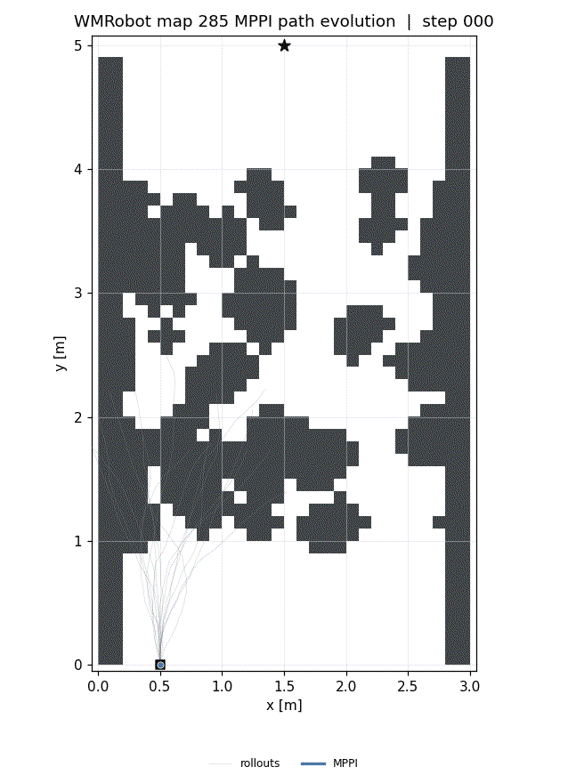

Abstract
This paper presents Kinodynamic Bidirectional Clustering Model Predictive Path Integral (BiC-MPPI), a sampling-based trajectory optimizer for long-horizon goal-reaching tasks in cluttered environments. BiC-MPPI retains multiple clustered forward branches from the current state and reverse-time heuristic branches from the goal, associates opposite-direction branch representatives, and uses the resulting connections as references for forward Guide MPPI refinement.
On 600 modified BARN navigation trials, BiC-MPPI achieved a 97.3% success rate, compared with 47.7–54.2% for the evaluated unidirectional baselines. On 240 simulated 6-DOF manipulator tasks, the best BiC-MPPI configuration achieved a 41.7% success rate, compared with 10.0–22.5% for the evaluated baselines. BiC-MPPI evaluates additional backward and guide rollouts; the paper therefore reports the runtime of each algorithmic stage separately.
Method
Bidirectional Branch Generation
Generate and cluster forward cost-to-come rollouts from the current state and reverse-time heuristic cost-to-go rollouts from the goal.
Branch Association
Associate forward and backward representatives using a connection metric, trim them at the nearest pair, and concatenate their segments into guide candidates.
Guide MPPI Refinement
Refine every connected candidate with forward rollouts from the current state, then execute the first control of the lowest-cost dynamically consistent trajectory.
Results
Modified BARN Navigation
97.3%
584 successes over 600 trials with BiC-MPPI-KMeans, versus 47.7–54.2% for the evaluated unidirectional baselines.
6-DOF Manipulator Planning
41.7%
100 strict successes over 240 tasks with BiC-MPPI-KMeans, versus 10.0–22.5% for the evaluated baselines.
Key findings
- Bidirectional branch diversity provides explicit goal-side structure that forward-only rollout sampling lacks.
- Guide MPPI converts connected branch candidates into forward-dynamically consistent control sequences.
- The reliability gain requires additional clustering, connection, and guide-refinement computation; runtime is therefore decomposed by stage.
Qualitative Results
Path evolution on the same modified BARN map. The star marks the goal and the robot starts at the bottom of the map.



6-DOF Manipulator Planning
Simulated joint-space planning with task-space collision checking around an axis-aligned obstacle.
BibTeX
@misc{jung2026bicmppi,
title = {BiC-MPPI: Bidirectional Clustering MPPI for
Long-Horizon Kinodynamic Trajectory Optimization},
author = {Jung, Minchan and Kim, Jeonguk and Kim, Kwang-Ki},
year = {2026},
note = {Preprint},
url = {https://jeonguk-k.github.io/BiC-MPPI-project-page/}
}